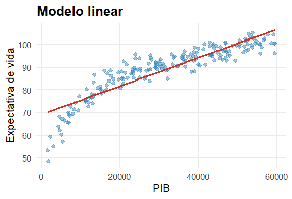
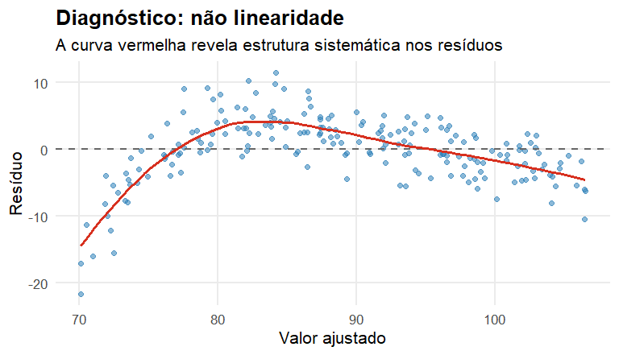
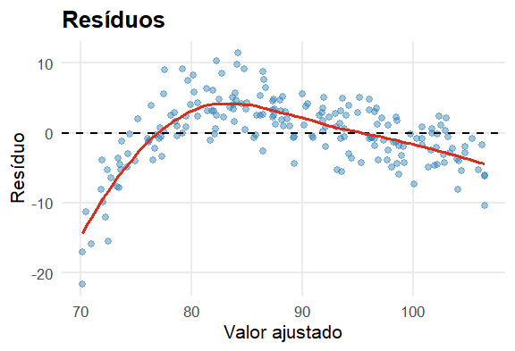
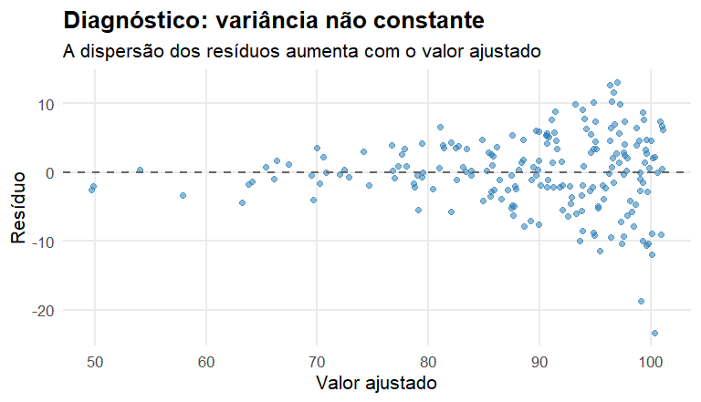
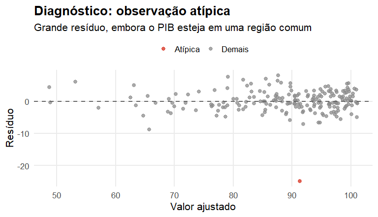
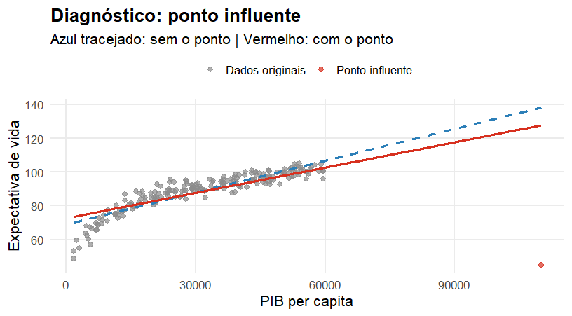
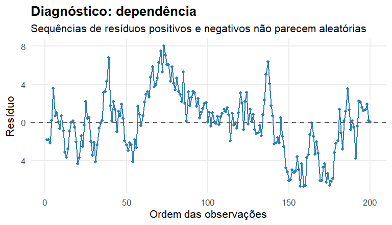

Material complementar: Regressão Linear
Este conjunto aprofunda aspectos matemáticos e inferenciais da regressão linear que não precisam ocupar o núcleo das aulas regulares.
O foco da aula principal é aprendizagem, predição e generalização. Aqui ficam derivações e propriedades úteis para consulta.
Considere
\[ Y_i=\beta_0+\beta_1X_i+\varepsilon_i \]
Queremos minimizar
\[ S(\beta_0,\beta_1) = \sum_{i=1}^n (y_i-\beta_0-\beta_1x_i)^2 \]
Derivando em relação a \(\beta_0\):
\[ \frac{\partial S}{\partial\beta_0} = -2\sum_{i=1}^n (y_i-\beta_0-\beta_1x_i)=0 \]
Derivando em relação a \(\beta_1\):
\[ \frac{\partial S}{\partial\beta_1} = -2\sum_{i=1}^n x_i(y_i-\beta_0-\beta_1x_i)=0 \]
As condições anteriores produzem
\[ \sum_i y_i = n\widehat\beta_0+ \widehat\beta_1\sum_i x_i \]
e
\[ \sum_i x_i y_i = \widehat\beta_0\sum_i x_i+ \widehat\beta_1\sum_i x_i^2 \]
\[ \boxed{ \widehat\beta_1 = \frac{ \sum_i(x_i-\bar x)(y_i-\bar y) }{ \sum_i(x_i-\bar x)^2 } } \]
e
\[ \boxed{ \widehat\beta_0 = \bar y-\widehat\beta_1\bar x } \]
A reta de mínimos quadrados passa por
\[ (\bar x,\bar y) \]
\[ \mathbf y = \mathbf X\boldsymbol\beta+ \boldsymbol\varepsilon \]
Com intercepto,
\[ \mathbf X= \begin{bmatrix} 1 & x_{11} & \cdots & x_{1p}\\ 1 & x_{21} & \cdots & x_{2p}\\ \vdots & \vdots & & \vdots\\ 1 & x_{n1} & \cdots & x_{np} \end{bmatrix} \]
\[ S(\boldsymbol\beta) = (\mathbf y-\mathbf X\boldsymbol\beta)^\top (\mathbf y-\mathbf X\boldsymbol\beta) \]
Expandindo:
\[ S(\boldsymbol\beta) = \mathbf y^\top\mathbf y - 2\boldsymbol\beta^\top\mathbf X^\top\mathbf y + \boldsymbol\beta^\top\mathbf X^\top\mathbf X\boldsymbol\beta \]
\[ \nabla_{\boldsymbol\beta}S = -2\mathbf X^\top\mathbf y + 2\mathbf X^\top\mathbf X\boldsymbol\beta \]
Igualando a zero:
\[ \mathbf X^\top\mathbf X\widehat{\boldsymbol\beta} = \mathbf X^\top\mathbf y \]
Se \(\mathbf X^\top\mathbf X\) for inversível:
\[ \boxed{ \widehat{\boldsymbol\beta} = (\mathbf X^\top\mathbf X)^{-1} \mathbf X^\top\mathbf y } \]
Na prática computacional, softwares não precisam calcular explicitamente essa inversa; decomposições numéricas como QR são preferíveis.
Os valores ajustados podem ser escritos como
\[ \widehat{\mathbf y} = \mathbf X\widehat{\boldsymbol\beta} \]
Logo,
\[ \widehat{\mathbf y} = \underbrace{ \mathbf X(\mathbf X^\top\mathbf X)^{-1}\mathbf X^\top }_{\mathbf H} \mathbf y \]
\(\mathbf H\) é a matriz chapéu.
\[ \mathbf e = \mathbf y-\widehat{\mathbf y} \]
Das equações normais,
\[ \boxed{ \mathbf X^\top\mathbf e=0 } \]
Portanto, os resíduos são ortogonais ao espaço gerado pelas colunas de \(\mathbf X\).
Uma formulação clássica utiliza
\[ E(\boldsymbol\varepsilon\mid\mathbf X)=0 \]
e
\[ \operatorname{Var}(\boldsymbol\varepsilon\mid\mathbf X) = \sigma^2\mathbf I \]
Sob essas condições,
\[ E(\widehat{\boldsymbol\beta}\mid\mathbf X) = \boldsymbol\beta \]
\[ \operatorname{Var} (\widehat{\boldsymbol\beta}\mid\mathbf X) = \sigma^2 (\mathbf X^\top\mathbf X)^{-1} \]
Isso conecta a geometria das covariáveis à incerteza dos coeficientes.
Sob as hipóteses usuais, o estimador de mínimos quadrados é BLUE:
Best Linear Unbiased Estimator
Isto é, possui menor variância dentro da classe de estimadores lineares não viesados.
Essa propriedade é sobre estimação dos coeficientes — não garante automaticamente melhor desempenho preditivo fora da amostra.
\[ \widehat\sigma^2 = \frac{ \sum_i e_i^2 }{ n-p-1 } \]
Sob normalidade dos erros, podemos construir testes e intervalos de confiança para os coeficientes.
A matriz
\[ \widehat\sigma^2 (\mathbf X^\top\mathbf X)^{-1} \]
fornece as variâncias estimadas dos coeficientes.
Para \(\beta_j\):
\[ SE(\widehat\beta_j) = \sqrt{ \widehat{\operatorname{Var}}(\widehat\beta_j) } \]
Para
\[ H_0:\beta_j=0, \]
utilizamos
\[ t = \frac{ \widehat\beta_j }{ SE(\widehat\beta_j) } \]
“Estatisticamente significativo” e “útil para predição” são perguntas diferentes.
Para um ponto \(x_0\), podemos estimar
\[ E(Y\mid X=x_0) \]
O intervalo de confiança representa incerteza sobre a média condicional.
Para prever um novo \(Y_0\) em \(x_0\), precisamos considerar também o ruído individual:
\[ Y_0=r(x_0)+\varepsilon_0 \]
Por isso,
\[ \boxed{ \text{intervalo de predição} > \text{intervalo para a média} } \]
em termos de largura.
Gráficos de resíduos podem indicar:
Esses diagnósticos investigam se a estrutura escolhida é compatível com os dados.
Continuaremos usando o exemplo
\[ \text{PIB per capita}\longrightarrow\text{Expectativa de vida}. \]
Os dados foram simulados segundo
\[ Y=40+15\log(X/1000)+\varepsilon, \qquad \varepsilon\sim N(0,3^2). \]
Se a estrutura média estiver adequadamente representada,
\[ E(e\mid X=x)\approx0 \] Um padrão sistemático sugere que parte da relação entre \(X\) e \(Y\) ainda não foi aprendida.

\[ \boxed{E(e\mid X)\neq0\Rightarrow\text{a forma funcional pode ser inadequada}} \]


No modelo clássico, frequentemente supomos
\[ \operatorname{Var}(\varepsilon\mid X=x)=\sigma^2 \]
Na heterocedasticidade, a dispersão dos erros depende de \(x\).
Para isolar o fenômeno, manteremos a mesma relação média e faremos apenas a variância aumentar com o PIB.

\[ \boxed{\operatorname{Var}(\varepsilon\mid X=x)\neq\sigma^2} \]
O problema está em
\[ E(Y\mid X=x) \]
A função média foi mal especificada.
O problema está em
\[ \operatorname{Var}(Y\mid X=x) \]
A dispersão muda ao longo de \(X\).
Uma observação pode apresentar um valor de \(Y\) muito incomum para seu valor de \(X\).
No gráfico de resíduos isso aparece como
\[ |e_i|\ \text{muito grande}. \]
Isso não significa, necessariamente, que a observação altere fortemente o modelo.

\[ \boxed{\text{outlier}\neq\text{ponto influente}} \]
Na regressão simples, uma observação tem alta alavancagem quando seu valor de \(X\) está muito distante da região onde se concentram os demais valores.
Mas:
\[ \boxed{\text{alta alavancagem}\not\Rightarrow\text{influência}} \]
A pergunta sobre influência é: quanto o ajuste muda por causa daquela observação?

| Conceito | Característica principal |
|---|---|
| Outlier | resposta incomum dado \(X\) |
| Alta alavancagem | valor de \(X\) incomum |
| Influente | altera sensivelmente o modelo ajustado |
\[ \boxed{\text{outlier}\neq\text{alta alavancagem}\neq\text{influência}} \]
Em muitas formulações supomos
\[ \operatorname{Cov}(\varepsilon_i,\varepsilon_j)=0,\qquad i\neq j. \]
Isso pode falhar em séries temporais, dados espaciais, medidas repetidas ou dados agrupados.
Para ilustrar, manteremos a mesma relação PIB–expectativa de vida e introduziremos autocorrelação nos erros.
Geraremos
\[ \varepsilon_t=0.85\varepsilon_{t-1}+u_t \]
Assim, erros próximos tendem a apresentar comportamento semelhante.
O gráfico apropriado agora é o resíduo na ordem das observações.

\[ \boxed{\operatorname{Cov}(\varepsilon_i,\varepsilon_j)\neq0} \]
| Padrão observado | Pergunta diagnóstica |
|---|---|
| Curvatura | a média foi modelada adequadamente? |
| Funil | a variância é aproximadamente constante? |
| Resíduo extremo | há uma resposta atípica? |
| Mudança forte no ajuste | alguma observação é influente? |
| Sequências nos resíduos | os erros são independentes? |
Como o modelo está errando?
Procura estrutura nos resíduos e observações com comportamento incomum.
Quanto o modelo erra fora da amostra?
Usa validação/teste para estimar o desempenho preditivo.
O gráfico de resíduos compara o comportamento observado com o que esperaríamos se o modelo fosse adequado.
\[ \boxed{ \text{padrão nos resíduos} \Rightarrow \text{estrutura ainda não explicada pelo modelo} } \]
Mas ausência de padrão residual não substitui avaliação fora da amostra.
\[ \boxed{ \text{diagnóstico adequado} + \text{boa generalização} } \]
Quando colunas de \(\mathbf X\) são quase linearmente dependentes,
\[ \mathbf X^\top\mathbf X \]
fica mal condicionada.
Consequências possíveis:
A regularização modifica o problema de otimização.
No Ridge:
\[ \min_{\boldsymbol\beta} \left\{ RSS+ \lambda\sum_{j=1}^p\beta_j^2 \right\} \]
Esse tema será retomado no momento apropriado da disciplina.
Pergunta central:
O que podemos inferir sobre \(\boldsymbol\beta\)?
Ênfase em:
Pergunta central:
Quão bem \(\widehat g\) generaliza?
Ênfase em:
As duas perspectivas não são concorrentes.
\[ \boxed{ \text{inferência} \quad\text{e}\quad \text{predição} } \]
respondem a perguntas diferentes sobre o mesmo modelo.
Material complementar — EST335